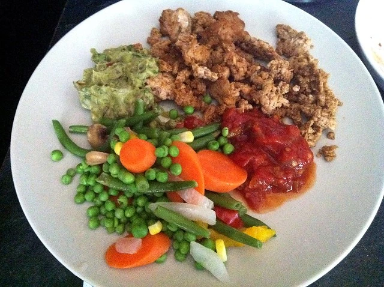

A Typical Lunch
Last week I pointed out that I was down 11 lbs or so I believe, which is a fair distance along my goal of being quite a bit skinnier before I take off for South America. I still have three months, so I can still do a lot more damage to my fat cells before I leave.
Last month I decided to take an engineering approach to things, so I went out and bought a digital scale. Weighing food is obviously kind of a pain in the ass, but I thought it would be a good spot check to make sure I was actually eating as much food as I thought I was. Surprisingly, I was actually underestimating some food by as much as 25%. So while I don't weigh food all that often, it helps to do a sanity check once and a while.
In conjunction with that, I make use of FitDay from time to time, which has been a pretty good resource over the years. FitDay allows you to enter in foods and quantities and helps plot calories, nutrients, activity, etc. I know some people use it for every meal of every day, and I think that's great if it helps them. For me, I basically just use it when I want to figure out the nutrient contents of certain foods or the calorie content of something custom (for example, home made guacamole).
I generally try to eat three meals during the day, and possibly an evening snack if I'm still a bit hungry. While not very exciting, a typical lunch for me during the week looks like the following:

What you're looking at is some lightly seasoned ground pork, about a tablespoon and a half of home made guacamole, some salsa (in this case, my step-mom's home made salsa), and some random mixed frozen vegetables. According to FitDay, this meal has about 500 calories in it. It's about 57% fat (the majority being monounsaturated fat from the guacamole), 18% carbohydrates (of which about half are fibre), and about 26% protein.
About a month ago I decided to go out of my way in an effort to try and eat higher quality proteins. For me, that means a lot less grain-fed or pure red meat, such as grain-fed beef. In terms of frequency, I've been eating ground chicken, ground pork and ground turkey the most, with grass-fed beef once or twice a week. I should probably toss some more fish in, but I haven't quite figured out a good way to cook fish at home that I can eat consistently.
Depending on how much activity I do during the day, I generally shoot for around 1,800 calories or so a day, which I can do pretty easily with three meals and a light snack.